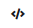
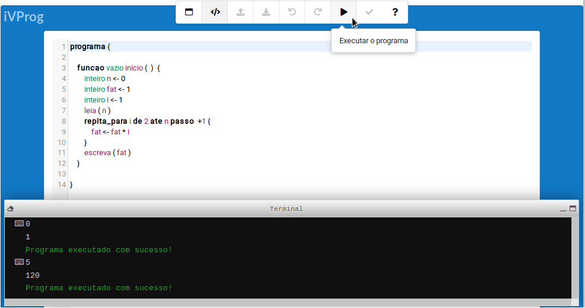

Textual environment
Construct algorithms using the interface to enter the code (in the form of text), using the syntax Portugol.

Image of iVProg using the textual interface: code to print the fatorial of any natural number, to be entered by the user.